ggcyto : Visualize Cytometry data with ggplot
Source: vignettes/Top_features_of_ggcyto.Rmd
Top_features_of_ggcyto.Rmd
1: suppoort 3 types of plot constructor
- represent different levels of complexity and flexibility
- meet the needs of various plot applications
- suitable for users at different levels of coding skills.
low level: ggplot
The overloaded fority methods empower ggplot to work with all the major Cytometry data structures right away, which allows users to do all kinds of highly customized and versitled plots.
GatingSet
gs <- load_gs(list.files(dataDir, pattern = "gs_manual",full = TRUE))
attr(gs, "subset") <- "CD3+"
ggplot(gs, aes(x = `<B710-A>`, y = `<R780-A>`)) + geom_hex(bins = 128) + scale_fill_gradientn(colours = gray.colors(9))
flowSet/ncdfFlowSet/flowFrame
fs <- gs_pop_get_data(gs, "CD3+")
ggplot(fs, aes(x = `<B710-A>`)) + geom_density(fill = "blue", alpha= 0.5)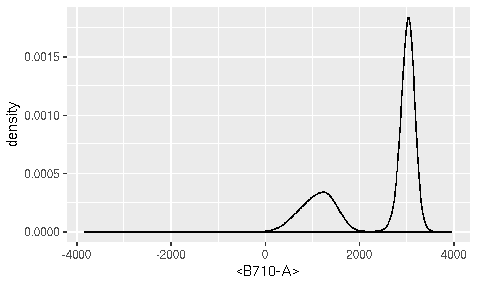
medium level: ggcyto
ggcyto constructor along with overloaded + operator encapsulate lots of details that might be tedious and intimidating for many users.
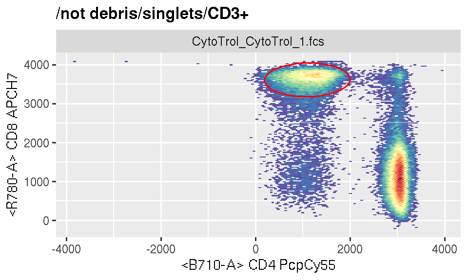
It simplies the plotting by: * add a default scale_fill_gradientn for you * fuzzy-matching in aes by either detector or fluorochromes names * determine the parent popoulation automatically * exact and plot the gate object by simply referring to the child population name
top level: autoplot
Inheriting the spirit from ggplot’s Quick plot, it further simply the plotting job by hiding more details from users and taking more assumptions for the plot.
- when plotting
flowSet, it determinesgeomtype automatically by the number ofdimsupplied - for
GatingSet, it further skip the need ofdimby guessing it from thechildrengate
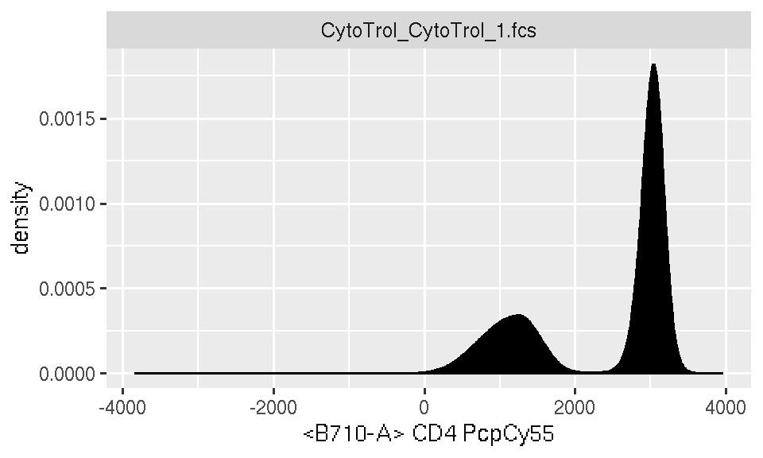
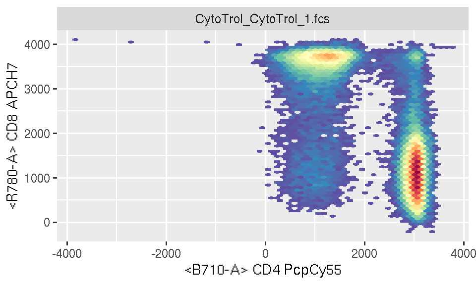
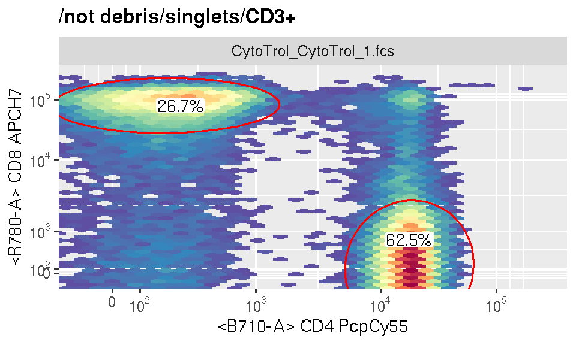
2: in-line transformation
It is done by different scales layers speically designed for cytometry
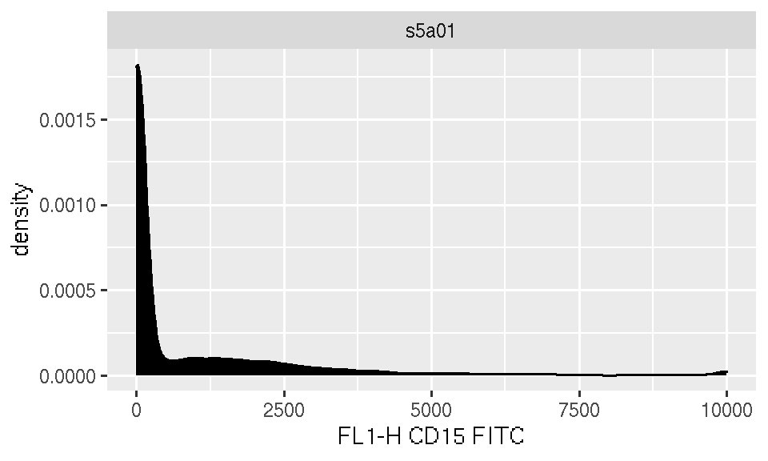
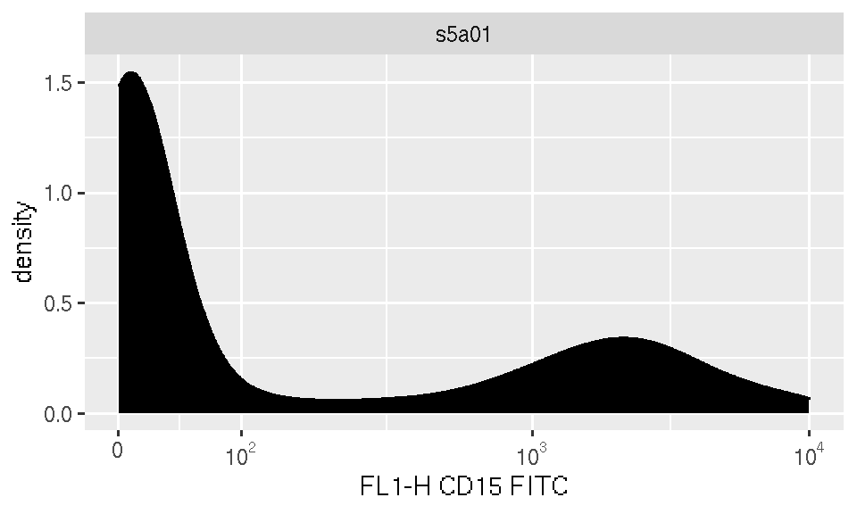
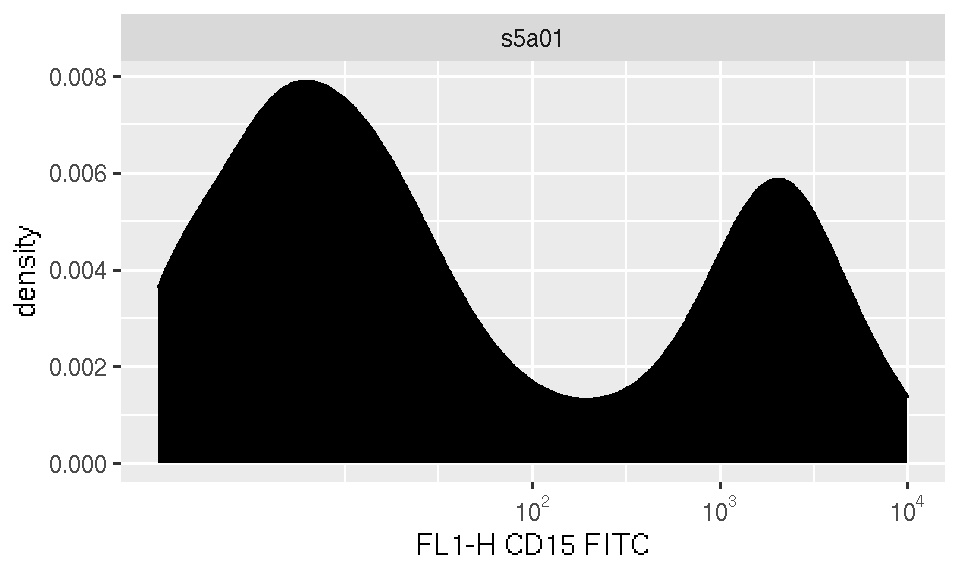
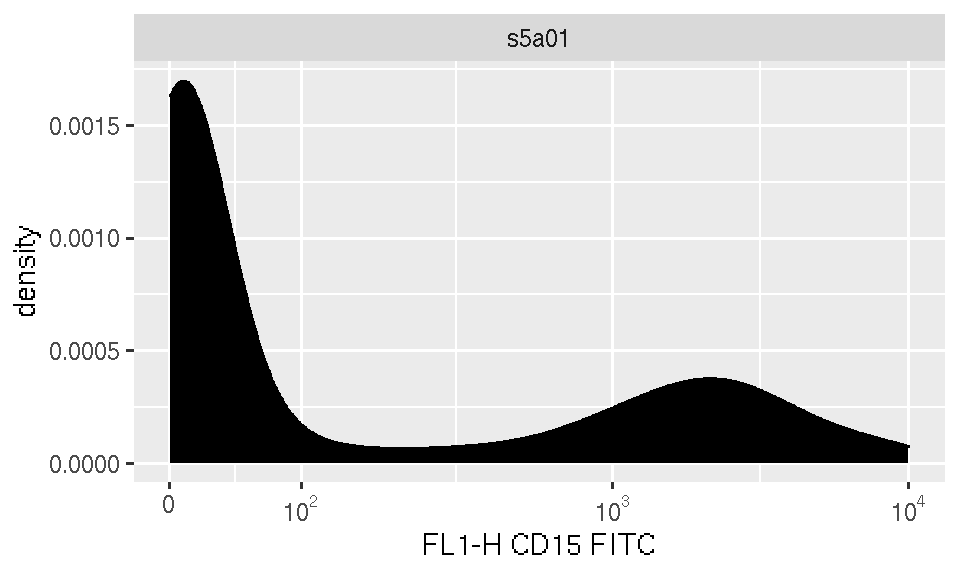
3: generic geom_gate layer
It hides the complex details pf plotting different geometric shapes
fr <- fs[[1]]
p <- autoplot(fr,"CD4", "CD8") + ggcyto_par_set(limits = "instrument")
#1d gate vertical
gate_1d_v <- openCyto::gate_mindensity(fr, "<B710-A>")
p + geom_gate(gate_1d_v)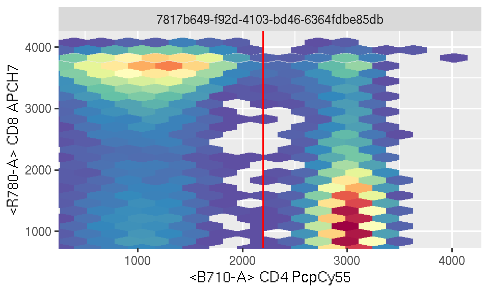
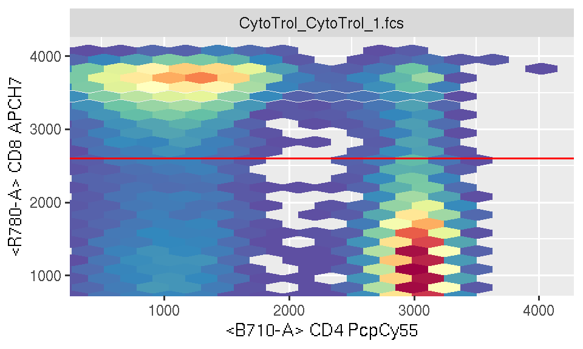
#2d rectangle gate
gate_rect <- rectangleGate("<B710-A>" = c(gate_1d_v@min, 4e3), "<R780-A>" = c(gate_1d_h@min, 4e3))
p + geom_gate(gate_rect)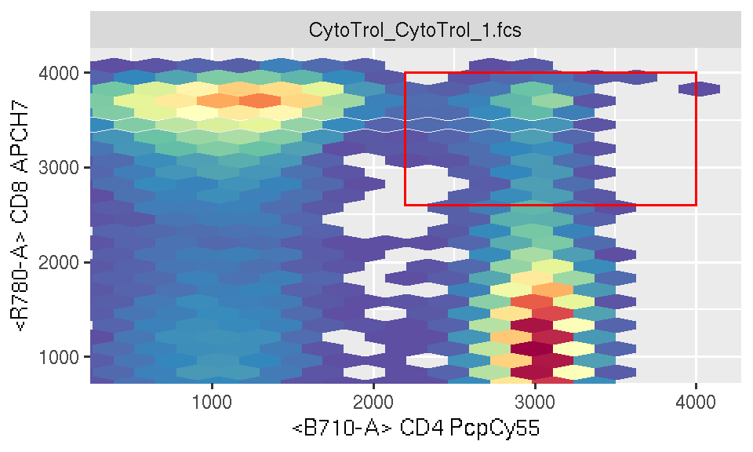
## [1] "ellipsoidGate"
## attr(,"package")
## [1] "flowCore"
4: geom_stats
p <- ggcyto(gs, aes(x = "CD4", y = "CD8"), subset = "CD3+") + geom_hex()
p + geom_gate("CD4") + geom_stats()
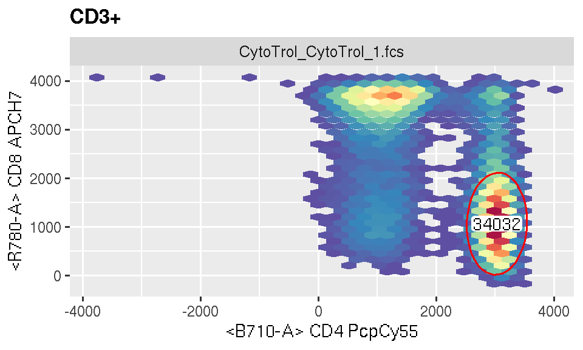
5: axis_inverse_trans
It can display the log scaled data in the original value
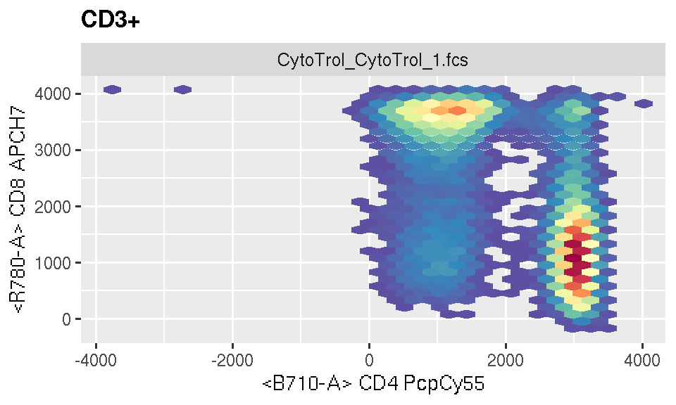
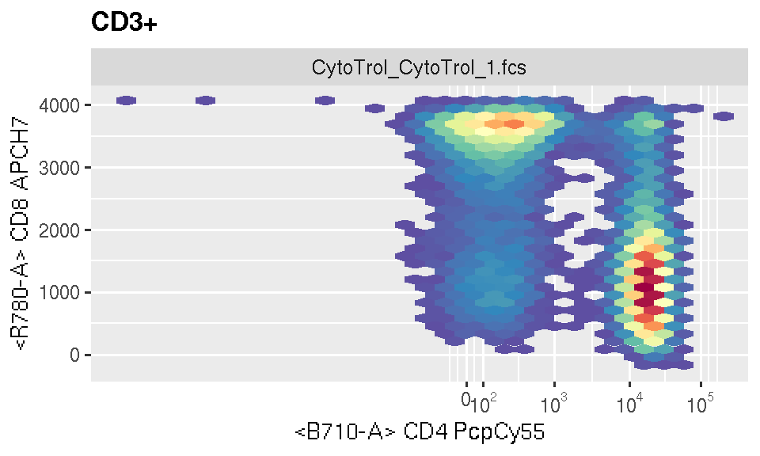
It currently only works with GatingSet.
8: ggcyto_par_set
It aggregates the different settings in one layer
#put all the customized settings in one layer
mySettings <- ggcyto_par_set(limits = "instrument"
, facet = facet_wrap("name")
, hex_fill = scale_fill_gradientn(colours = rev(RColorBrewer::brewer.pal(11, "Spectral")))
, lab = labs_cyto("marker")
)
# and use it repeatly in the plots later (similar to the `theme` concept)
p + mySettings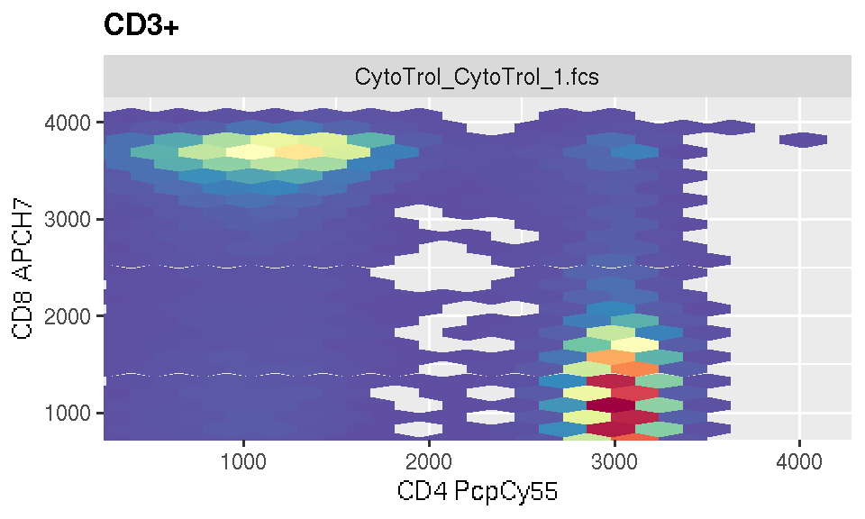
Currently we only support 4 settings, but will add more in future.
9: as.ggplot
It allows user to convert ggcyto objects to pure ggplot objects for further the manipulating jobs that can not be done within ggcyto framework.
## [1] "ggcyto_GatingSet"
## attr(,"package")
## [1] "ggcyto"## [1] "gg" "ggplot"10: ggcyto_layout
Layout many gate plots on the same page
When plooting a GatingHierarchy, multiple cell populations with their asssociated gates can be plotted in different panels of the same plot.
## [1] "singlets" "CD3+" "CD4" "CD4/38- DR+" "CD4/38+ DR+"
## [6] "CD4/38+ DR-" "CD4/38- DR-" "CD8"## [1] "ggcyto_GatingLayout"
## attr(,"package")
## [1] "ggcyto"
As you see, this generates a special ggcyto_GatingLayout object which is a container storing multiple ggcyto objects. You can do more about the plot layout with the helper function ggcyto_arrange. For example, to arrange it as one-row gtable object
## [1] "gtable" "gTree" "grob" "gDesc"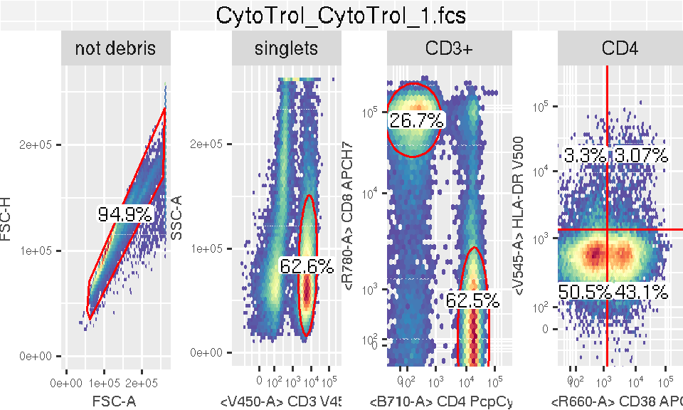
or even combine it with other ggcyto_GatingLayout objects(or any gtable objects) and print it on the sampe page
p2 <- autoplot(gh_pop_get_data(gh, "CD3+")[,5:8]) # some density plot
p2@arrange.main <- ""#clear the default title
gt2 <- ggcyto_arrange(p2, nrow = 1)
gt3 <- gridExtra::gtable_rbind(gt, gt2)
plot(gt3)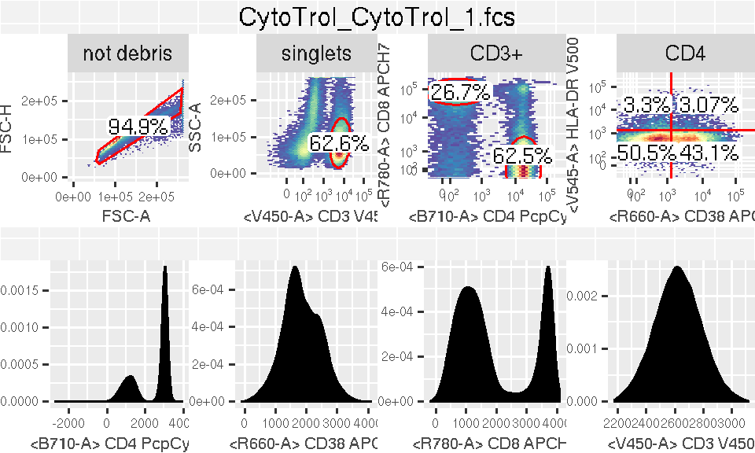